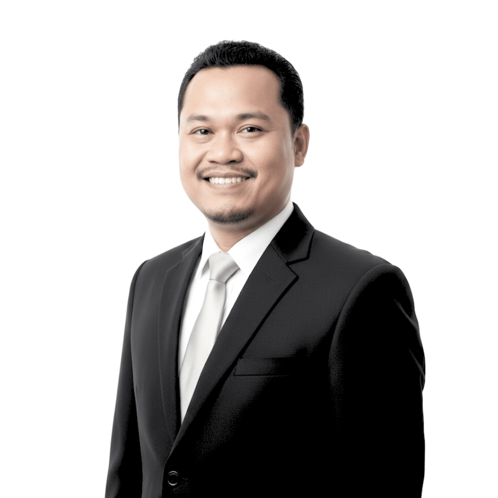
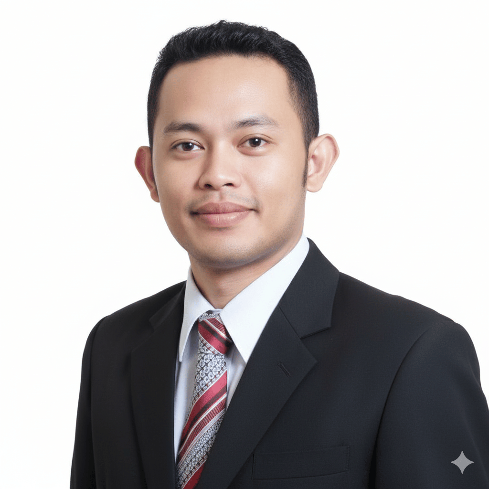
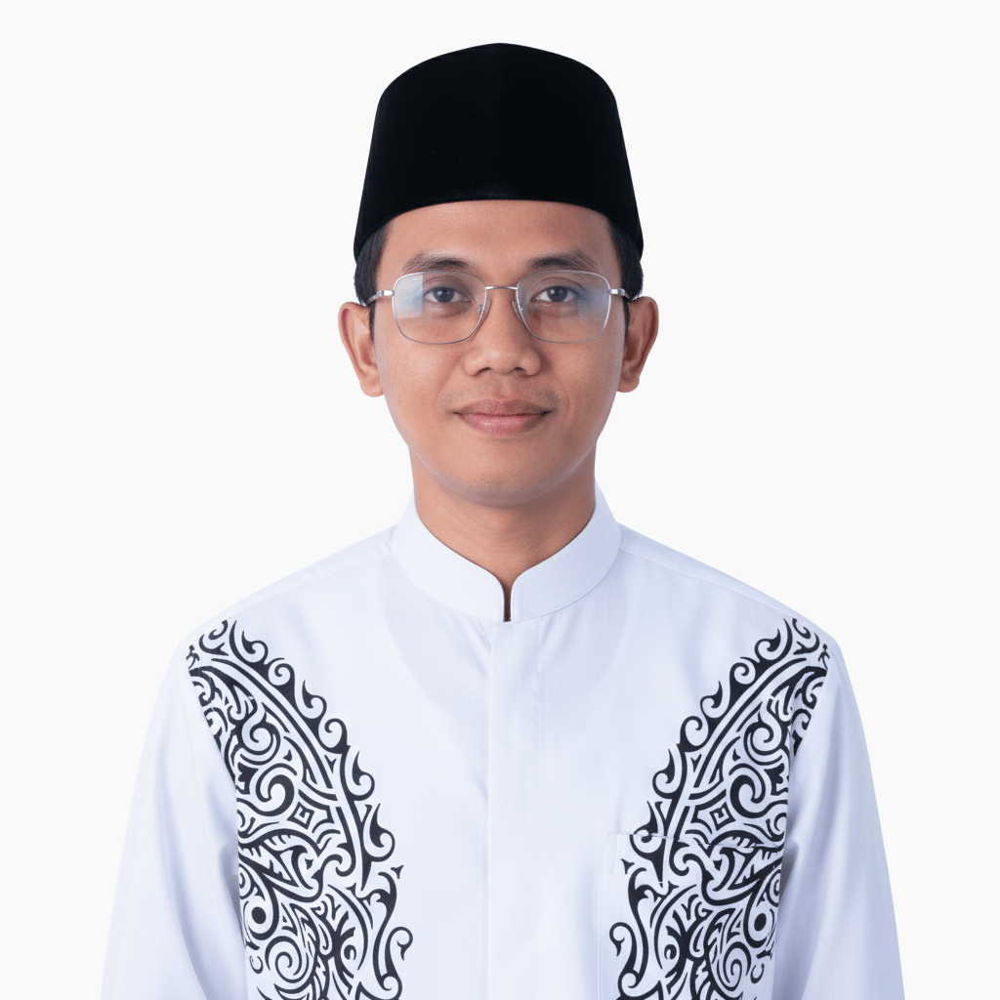
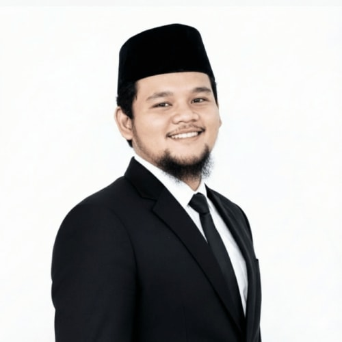

Ahli strategi dan manajemen proyek, mengarahkan kolaborasi untuk mencapai tujuan transformasi digital.

Pengawas dan penasehat perusahaan, memastikan arah strategis berjalan sesuai visi.

Spesialis jaringan dan infrastruktur, menjaga stabilitas konektivitas digital.

Pengembang backend sekaligus quality assurance, memastikan kode berkualitas dan sistem stabil.

Tenaga ahli di bidang DevOps dan pengembangan software, mengelola infrastruktur dan pipeline deployment.
Software engineer dengan fokus pada pengembangan aplikasi dan antarmuka yang modern dan efisien.